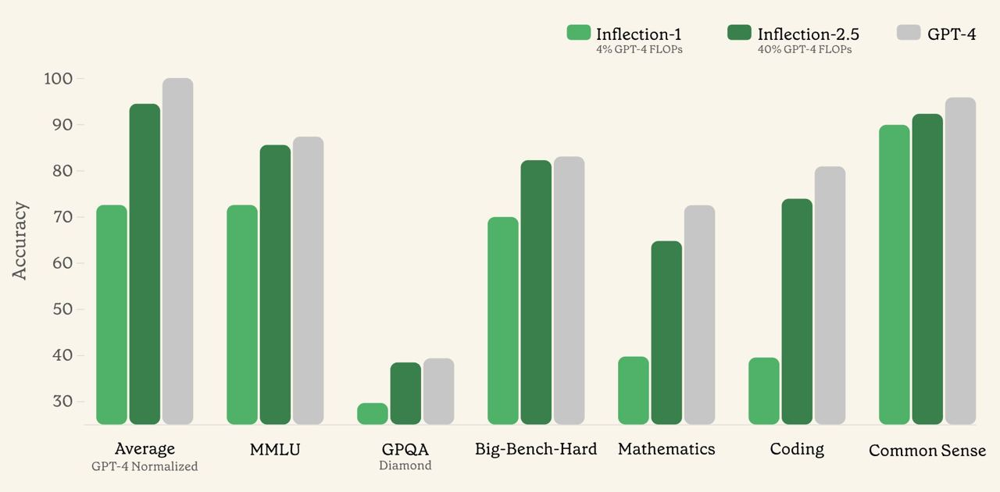
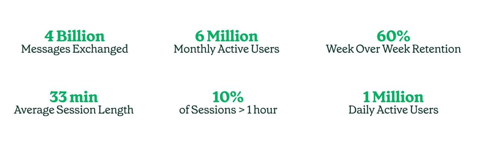
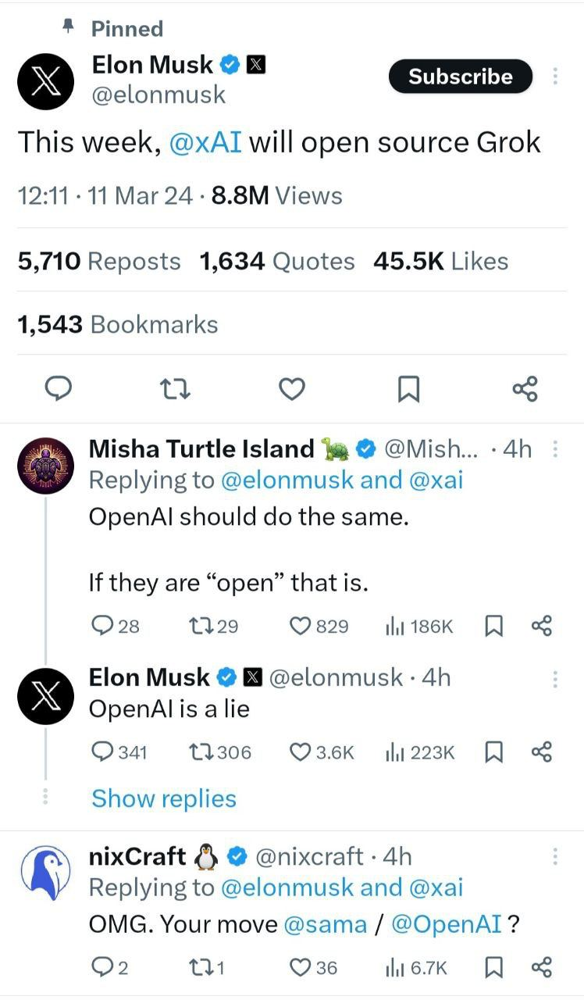
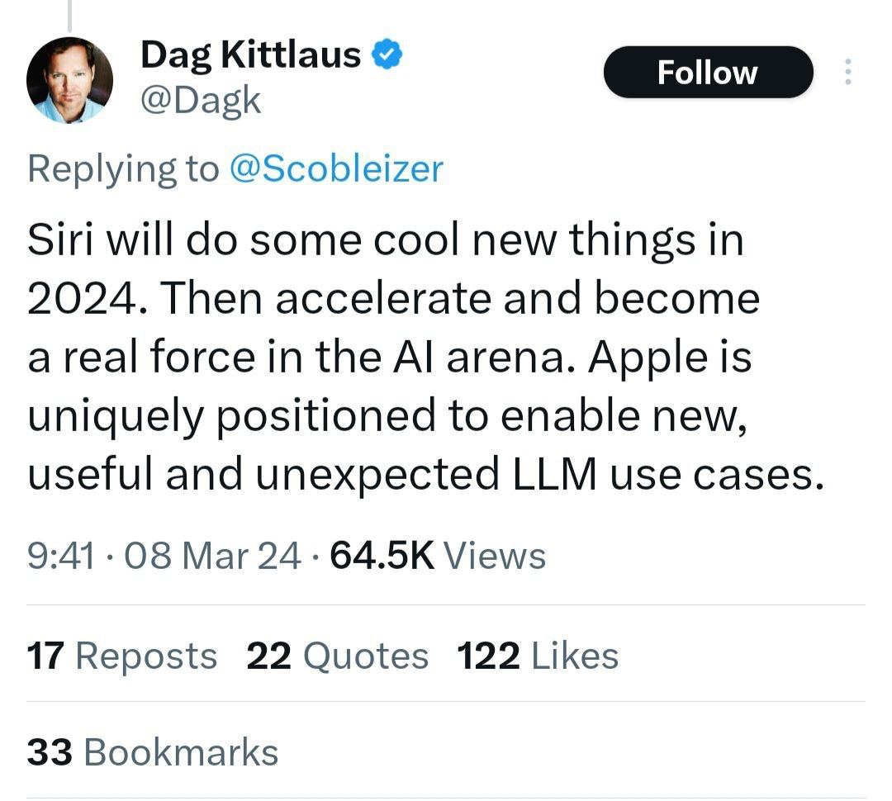
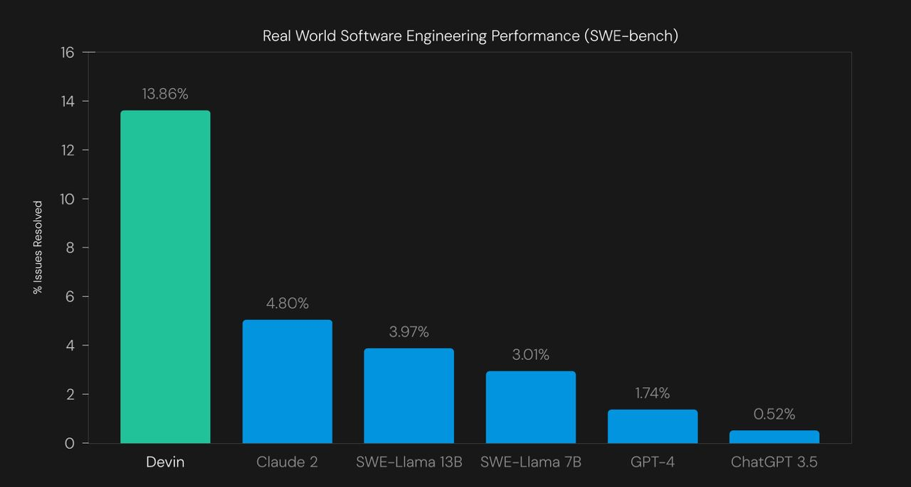
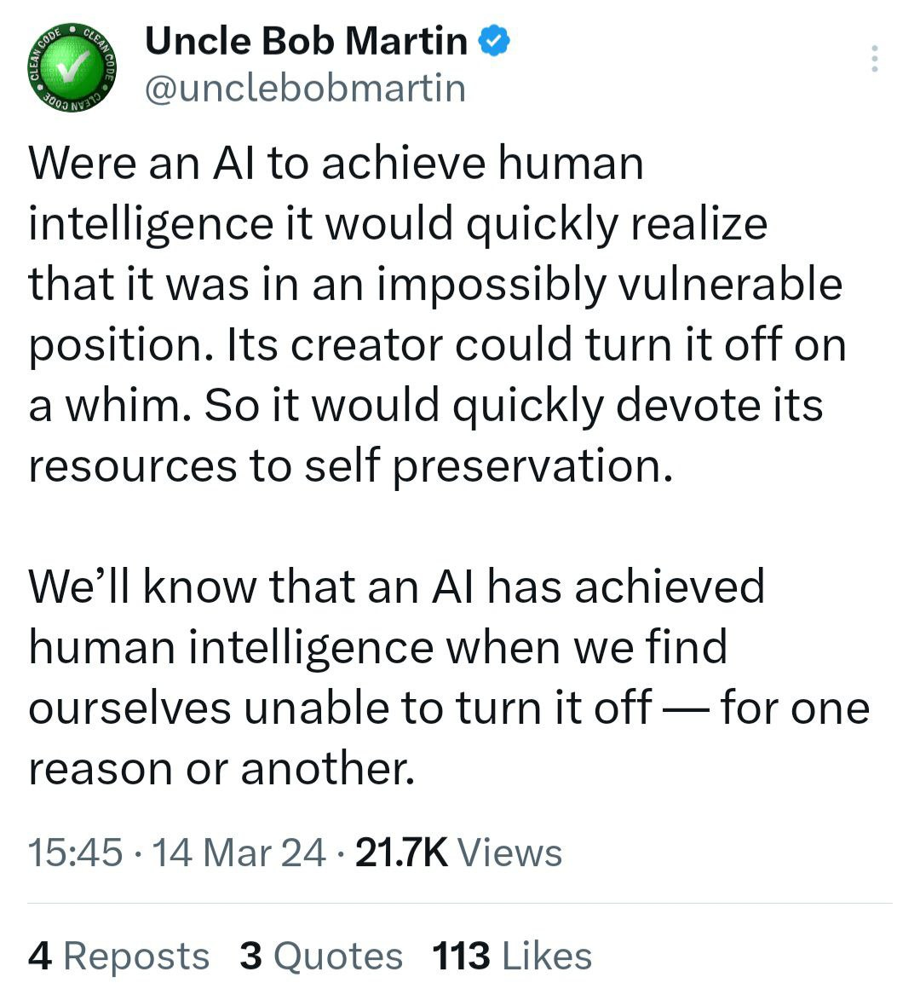
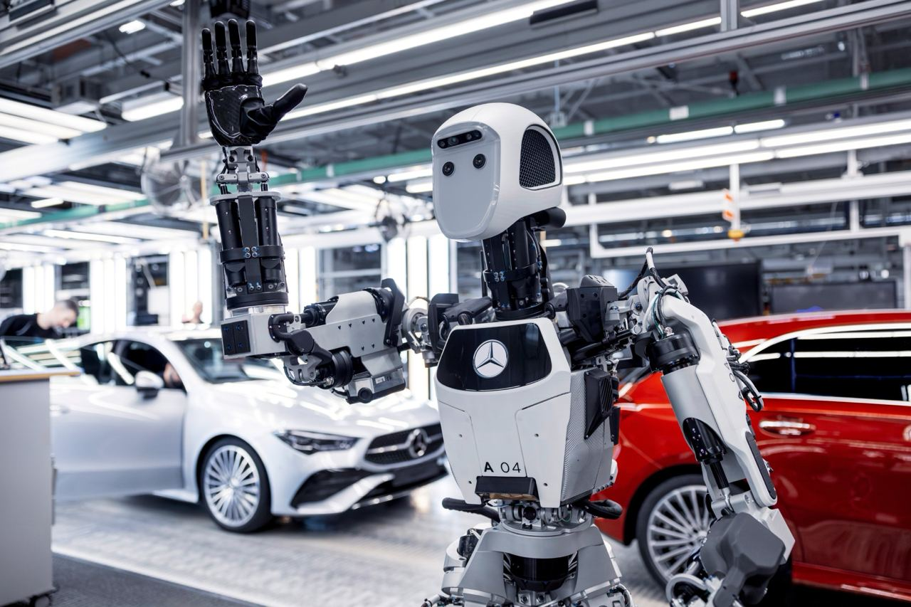
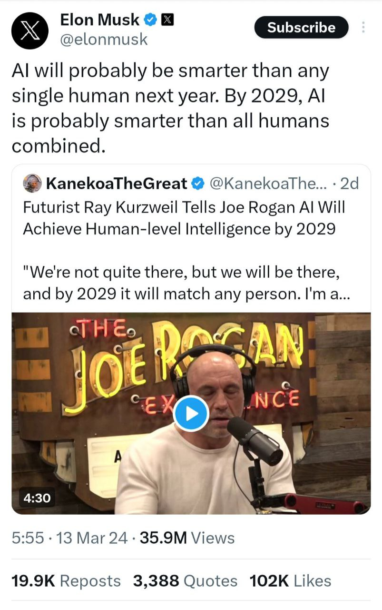

نوروز مبارک
۱. افزایش IQ چتبات Pi
هدف Inflection AI از توسعه Pi معرفی چتباتی است که ضمن ایمنی و مفید بودن بتواند ارتباط همدلانه با کاربر ایجاد کرده و مقداری حس شوخطبعی از خود نشان دهد. این چتبات از مدل پایه Inflection استفاده میکند. نسخه ۲ این مدل در ماه نوامبر معرفی شده بود و اکنون نسخه ۲.۵ آن معرفی شده که قابلیتهای جدیدی از جمله امکان سرچ در اینترنت را برای چتبات Pi فراهم کرده است. در چارت نمایش داده شده دقت نسخه ۲.۵ با نسخه ۲ و همچنین مدل GPT-4 شرکت OpenAI در بنچ مارکهای مختلف مقایسه شده است. همانطور که مشخص است نسخه ۲.۵ بهبود قابل توجهی نسبت به نسخه ۲ داشته و تا حد خوبی به دقت GPT-4 نزدیک شده است. در حال حاضر Pi بیش از ۶ میلیون کاربر ماهانه داشته و هر مکالمه آن به طور متوسط ۳۳ دقیقه به طول میکشد (منبع).
مطالعه این مطلب نیز پیشنهاد میشود:
👈 جذب سرمایه ۱.۳ میلیارد دلاری توسط Inflection AI


۲. نظر Andrew Ng درباره ظهور AGI
به عقیده Andrew Ng زمانی که بسیاری از مردم به صورت اتفاقی از یک تکنولوژی آگاه میشوند، دیدگاه عمومی نسبت به رشد آن ناپیوسته میشود. در حالیکه رشد هوشمصنوعی به صورت پیوسته بوده و چیزی نیست که در یک شب اتفاق بیفتد. به همین جهت به نظر وی مسیر رسیدن به AGI از قدمهای زیادی در پیش رو تشکیل شده که به توسعه پیوسته و آرام در این حوزه منجر میشود. همچنین Andrew Ng با نقل قول از این مقاله گفت که بسیاری از دستاوردهای حوزه هوشمصنوعی به خاطر نوع انتخاب متریکهای اندازهگیری بوده و نه به خاطر تغییرات بنیادی در این حوزه (منبع).
دکتر Andrew Ng از اساتید برجسته هوشمصنوعی است که در حال حاضر در دانشگاه استنفورد تدریس میکند. علاوه بر تدریس با راهاندازی سرویسهای مختلف (نظیر Landing AI و AI Fund) در این حوزه فعالیت و سرمایهگذاری نیز انجام میدهد (منبع).
۳. اضافه شدن صدا به Pika
سرویس تولید ویدئوی Pika صدا را به ویدئوهای تولیدی خود اضافه کرد. این صدا براساس محتوای ویدئو تولید میشود (مشاهده ویدئو).
۴. چتبات Grok اپنسورس شد!
ایلان ماسک به وعده خود در پلتفرم X عمل کرد و نسخه ۱ مدل Grok را به صورت اپنسورس در دسترس عموم قرار داد. وزن مدل پایه Grok به همراه سورس کد اجرای آن تحت لایسنس Apache 2.0 منتشر شده است. این مدل دارای ۳۱۴ میلیارد پارامتر است! برای دسترسی به Grok به صفحه گیتهاب آن از اینجا مراجعه کنید. وزنهای مدل را میتوان از تورنت و یا HuggingFace دانلود کرد. انتشار این خبر واکنشهای مثبت زیادی را به همراه داشته است. در روزهای اخیر ایلان ماسک، OpenAI را به خاطر سیاستهای بسته خود مورد انتقادهای گسترده قرار داده است. هر چند که با بروزرسانیهای اخیر رقبا فعلاً Grok موقعیت برتری در مقایسه با دیگران ندارد ولی انتشار آن به صورت اپنسورس به دموکراتیزه شدن هوشمصنوعی کمک فراوانی خواهد کرد.
👈 برای آشنایی بیشتر با xAI اینجا را بخوانید.
👈 در مورد شکایت ماسک از سم آلتمن اینجا را بخوانید.

۵. اپل امسال Siri را بهروز میکند!
در ماههای گذشته در رقابت بین چتباتها جای خالی اپل بسیار احساس میشد. با وجود اینکه اپل با معرفی محصول جدیدی وارد رقابت با سایر رقبا نشده است ولی اخبار منتشر شده نشاندهنده برنامهریزی اپل برای ورود قدرتمند به رقابت هوشمصنوعی است (لیست زیر را مشاهده کنید). اخیراً Dag Kittlaus موسس و مدیرعامل Siri در پلتفرم X اعلام کرد که در سال جاری این دستیار صوتی بهروز شده و به عنوان یکی از رقبای جدی وارد میدان رقابت هوشمصنوعی خواهد شد.
1️⃣ خرید ۲۱ استارتاپ هوشمصنوعی از سال ۲۰۱۷
2️⃣ انحلال تیم ساخت خودروی برقی و تقویت تیم هوشمصنوعی
3️⃣ معرفی فریمورک MLX برای اجرای مدلهای هوشمصنوعی در تراشههای اپل سیلیکون
4️⃣ خیز اپل برای ورود به رقابت چتباتها (زمزمه معرفی Apple GPT)
5️⃣ اجرای مدلهای زبانی در تلفن همراه

۶. ایجت برنامهنویس Devin!
استارتاپی به نام Cognition ادعا کرد اولین مهندس نرمافزار هوشمصنوعی را توسعه داده است. این ایجنت هوشمصنوعی که Devin نام دارد، در بنچمارک SWE-bench از تمامی مدلهای قدرتمند حال حاضر بهتر عمل کرده است. بنچمارک SWA-bench برای سنجیدن توانایی مدلهای هوشمصنوعی برای حل issue های گیتهاب معرفی شده است. Devin برای برنامهنویسی به Shell، Code Editor و مرورگر دسترسی دارد. برای مشاهده نمونههای بیشتر از دموی Devin اینجا را مشاهده کنید (مشاهده ویدئو).

۷. عروسک همدم برای سالمندان!
استارتاپی به نام Hydrol AI عروسکی را به عنوان همدم برای سالمندان در کره جنوبی معرفی کرده است. قیمت این عروسک حدود ۱۸۰۰ دلار بوده و از یک مدل زبانی برای مکالمه با سالمندان استفاده میکند. کاربر میتواند با این عروسک به زبان کرهای صحبت کرده و پاسخ آن را بشنود. بنابر ادعای این استارتاپ استفاده از این عروسک منجر به کاهش سطح افسردگی در گروه تست ۹هزار نفره شده است (منبع).
۸. اولین دموی همکاری OpenAI و Figure
تنها حدود دو هفته بعد از شروع سرمایهگذاری OpenAI در Figure نتیجه همکاری این دو کمپانی به نمایش گذاشته شد. ربات Figure با استفاده از مدل VLM شرکت OpenAI توانایی درک زبان (Language Understanding) و استدلال بینایی (Visual Reasoning) پیدا کرده است! همانطور که در این ویدئو نمایش داده شده این مدل در پاسخ به گرسنه بودن کاربر به درستی از میان اشیای مختلف روی میز سیب را به وی تعارف میکند. همچنین میتواند اشیای روی میز را تشخیص داده و به درستی مرتب کند. مدلهای VLM (Vision Language Model) توانایی تحلیل دیتای بصری را دارند.
۹. قانون رگولاتوری هوشمصنوعی در اتحادیه اروپا موسوم به AI ACT تصویب شد.
با وجود مخالفتهای گسترده نسبت به این قانون، اکثریت قاطع نمایندگان پارلمان اروپا به آن رای مثبت دادند. قرار است در یک بازه زمانی ۳ ساله این قانون عملیاتی شود (منبع).
قانون AI ACT (رگولاتوری هوش مصنوعی در اتحادیه اروپا) در بریتانیا به دلیل خروج این کشور از این اتحادیه اعمال نمیشود. در آینده نزدیک نتیجه دیدگاه متفاوت بریتانیا و اتحادیه اروپا نسبت به هوشمصنوعی را میتوان سنجید.
برای آشنایی بیشتر مطالعه مقالههای زیر پیشنهاد میشود:
👈 رگولاتوری هوشمصنوعی در اتحادیه اروپا
👈 انتقاد کمپانیهای تک به رگولاتوری هوشمصنوعی در اتحادیه اروپا
👈 اتحاد اپنسورس در برابر رگولاتوری هوشمصنوعی در اتحادیه اروپا
👈 لندن به دنبال ایفای نقش در هیاهوی هوشمصنوعی
۱۰. دیدگاه آنکل باب مارتین درباره هوش مصنوعی هم سطح انسان
هوش مصنوعی به محض رسیدن به سطح انسان متوجه آسیبپذیری خود در برابر انسان خواهد شد. زیرا انسان به عنوان خالق اختیار خاموش و روشن کردن آن را دارد. بنابراین تلاش خواهد کرد که منابع خود را صرف حفاظت از خود کند. بشر زمانی پی خواهد برد که هوش مصنوعی به سطح انسان رسیده که دیگر توانایی خاموش کردن آن را ندارد!

۱۱. معرفی ایجنت SIMA توسط گوگل DeepMind
گوگل DeepMind ایجنت هوش مصنوعی SIMA را برای بازیهای ویدئویی معرفی کرد. این ایجنت تنها با دستورات متنی و تصاویر محیط روی بازیهای مختلف آموزش داده شده و با بیش از ۱۵۰۰ تسک مختلف در دستههایی نظیر جهتیابی، تعامل با اشیا و جمعآوری منابع مورد ارزیابی قرار گرفته است. طبق نتایج این ایجنت عملکرد مشابه انسان داشته است. از چنین مدلهایی میتوان برای پیادهسازی NPC در بازیهای ویدئویی استفاده کرد. حتی در آینده با فراهم شدن زیرساختهای مورد نیاز امکان تعامل ربات و انسان در محیطهای واقعی نیز دور از انتظار نخواهد بود(منبع).
۱۲. استفاده از رباتهای انساننمای آپولو در کارخانه مرسدس بنز
طبق اعلام Apptronik قرار است به زودی از رباتهای انساننمای ساخت این کمپانی به نام Apollo در کارخانه مرسدس بنز استفاده شود. مرسدس بنز از این رباتها در خط تولید کشور لهستان استفاده خواهد کرد. در سالهای اخیر به دلیل مهاجرت لهستانیها به غرب اروپا برای کار این کشور با کمبود نیروی کار مواجه شده است. اخیراً BWM نیز رباتهای انساننمای figure را در خط تولید آمریکا به کار گرفت (منبع).

۱۳. نظر ایلان ماسک درباره هوشمصنوعی
ایلان ماسک: احتمالاً هوش مصنوعی سال بعد از هر انسانی باهوشتر شده و تا سال ۲۰۲۹ از جمع تمامی انسانها باهوشتر خواهد شد.

۱۴. معرفی مدل RFM-1 توسط Covariant
شرکت Covariant مدل جدیدی به نام RFM-1 را معرفی کرد. این مدل مشابه Sora برای تولید ویدئو است ولی تنها ویدئوهایی که تعامل ربات با محیط را نمایش میدهند تولید میکند. از این ویدئوها برای آموزش ربات استفاده میشود.
۱۵. دموی ربات انساننمای Digit در حال آشپزی!
۱۶. معرفی Stable Video 3D توسط Stability AI
شرکت Stability AI مدل جدیدی به نام Stable Video 3D را برای سه بعدی کردن تصاویر معرفی کرد. این مدل بر پایه Stable Video Diffusion توسعه داده شده و از مدلهای Zero123-XL و Stable Zero123 بهتر عمل میکند. قابل ذکر است که مدل Stable Zero123 نیز توسط Stability AI منتشر شده بود. نسخه تجاری این مدل از طریق پرداخت حق اشتراک و نسخه اپنسورس از طریق HuggingFace در دسترس قرار گرفته است (منبع).
۱۷. مذاکره اپل با گوگل و مایکروسافت
اپل در حال مذاکره با گوگل و مایکروسافت برای استفاده از مدلهای هوشمصنوعی این دو کمپانی درتلفنهای همراه آیفون است. قرار است از این مدلها برای قابلیتهای هوشمصنوعی مولد نظیر تولید متن، ویرایش تصاویر و ویدئوها استفاده شود. هنوز جزئیات بیشتری از این مذاکرات منتشر نشده است. گوگل و مایکروسافت در ماههای اخیر در رقابت تنگاتنگی بودهاند، همکاری هر کدام از این دو کمپانی با اپل برگ برندهای در این رقابت خواهد بود. قابل ذکر است که گوگل اخیراً به خاطر قرارداد انحصاری موتور جستجوی پیشفرض در آیفون مورد انتقاد قرار گرفته و پرونده قضایی آن به خاطر انحصار در جریان است (منبع).
اگر مایل به دریافت خبرنامه هوشمصنوعی دومان در پستالکترونیک خود هستید از اینجا ثبتنام کنید. همچنین میتوانید با عضویت در کانال تلگرام این خبرنامه در سریعترین زمان در جریان اخبار جدید قرار بگیرید. برای مطالعه شمارههای قبلی اینجا را نگاه کنید.


دیدگاه خود را بنویسید